Selected project
Pixel art for Faster Than Light
The following is an array of pixel art I have been commissioned to do or did for my own personal enjoyment. They were all created for mods of the game Faster Than Light by Subset Games.

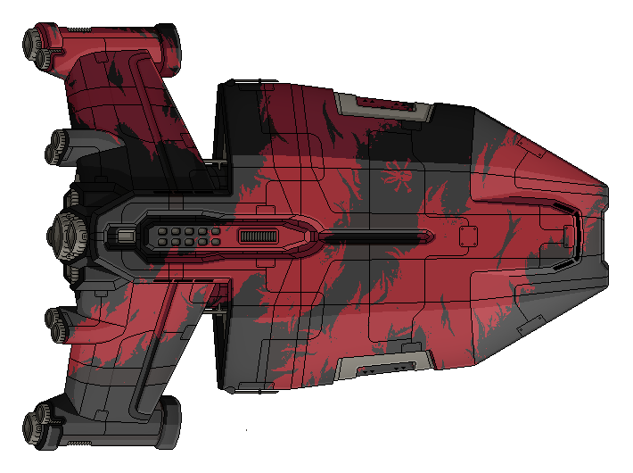
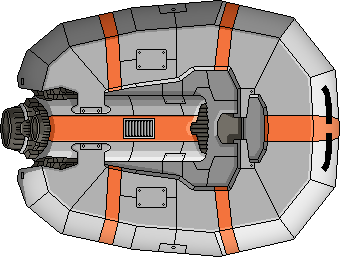
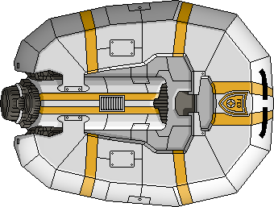
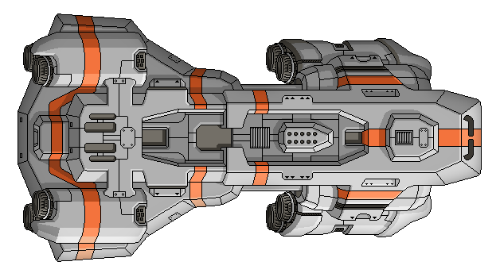
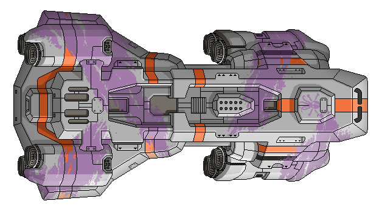
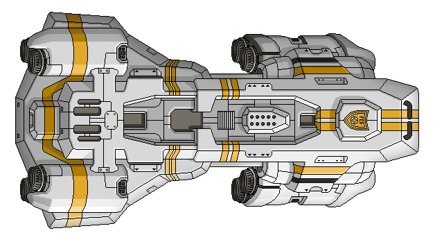
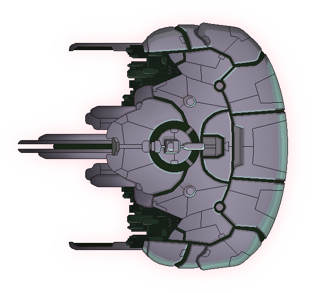
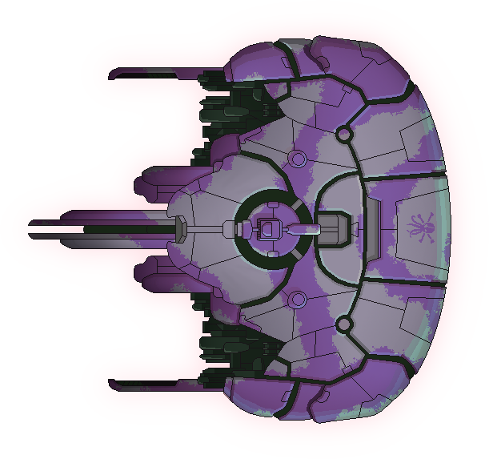
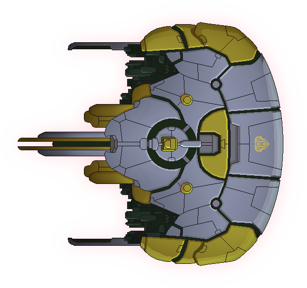
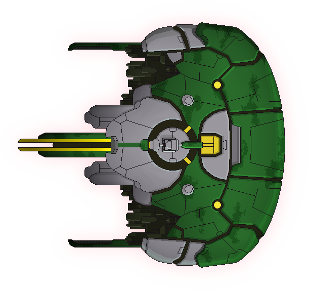
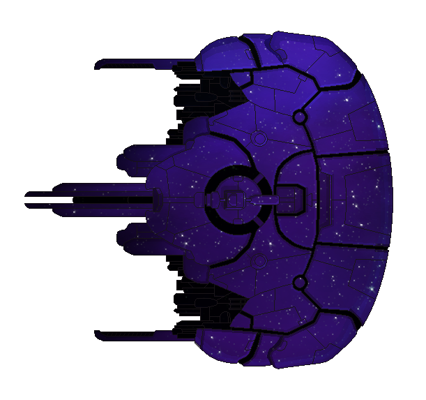
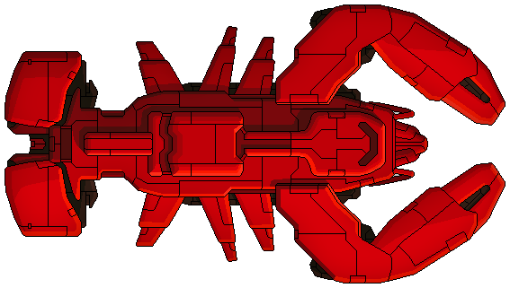
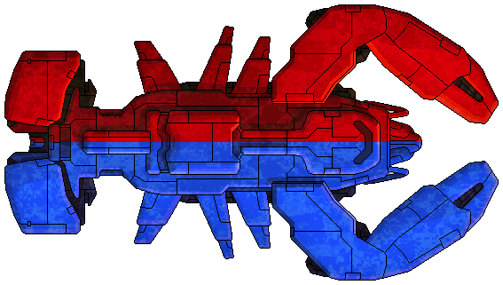
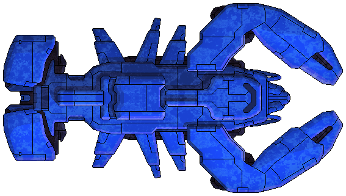
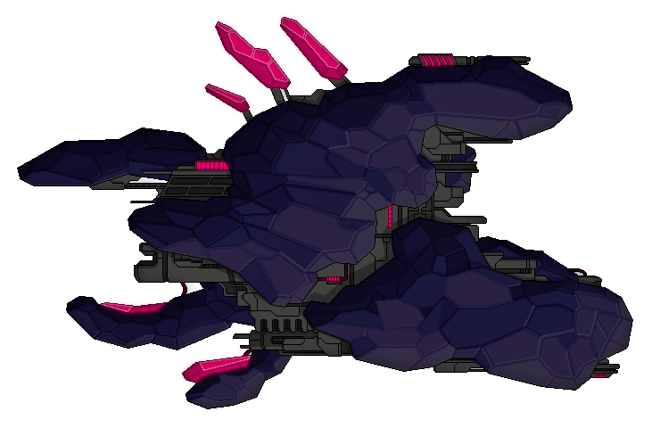
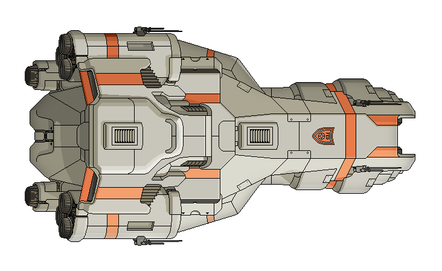
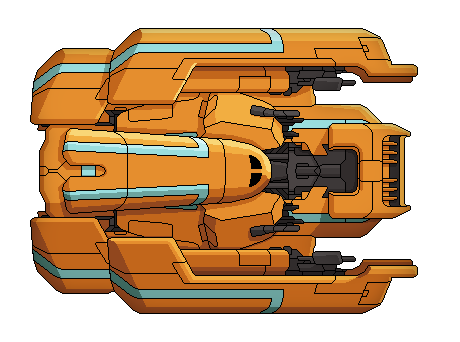
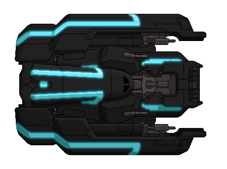
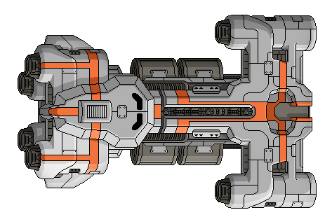
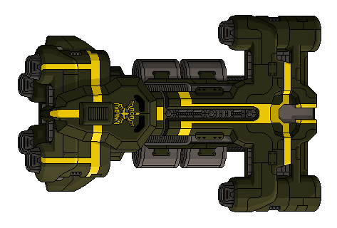
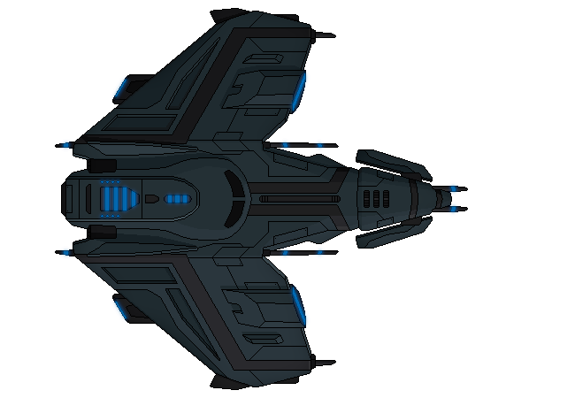
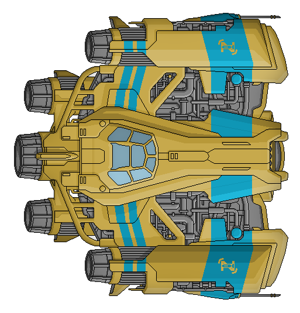
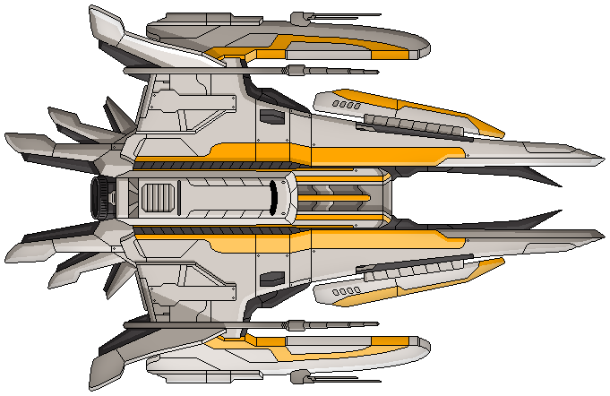
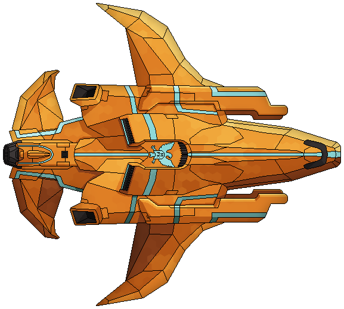
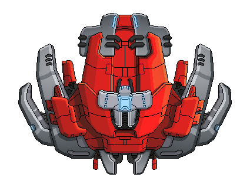